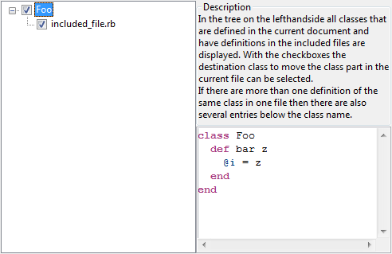

Merge Class Parts in File
Description
In Ruby it is allowed to declare a class at several places in the same or in different files.
Class declarations following after a first one will logically be added to the first class
declaration. This language feature is called open classes.
So an instance of a Ruby class will provide the combined functionality of all the class
declaration parts even when they are spread over several files.
The Merge Ruby Class Parts refactoring pulls all those class declarations together and
merges them into one single part. This might be useful to get a better overview in a
larger Ruby project.
This refactoring works for merging several class parts distributed over two or more files.
Conditions
The active file needs to have at least one other file included which contains
one or more parts of classes in the active file.
Options

In the tree all classes of the current file which have several parts in other files are listed. The target
class will be merged with the checked parts in the required files.

Feedback